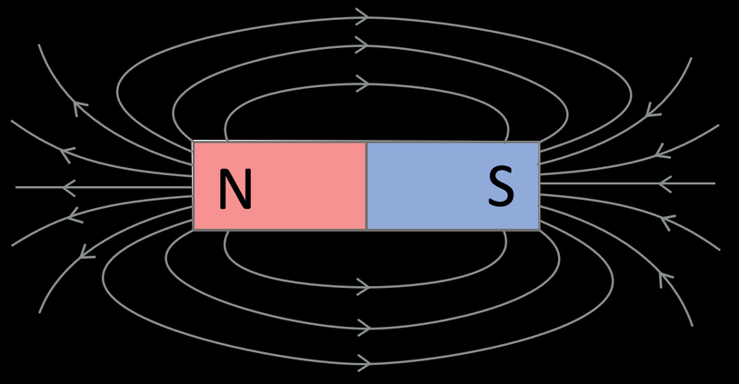

Magnets are materials that produce a magnetic field, which exerts a force upon certain materials like iron, steel, and cobalt. Every magnet has 2 poles, north and south. The north pole of a magnet is denoted with the letter N, and the south with the letter S. Usually, the north pole of a magnet is colored blue, and the south pole is colored red. Every magnet must have both poles. Even if we divide a magnet into 2, both pieces will become new magnets with both a north and a south pole.
There exists a magnetic field around a magnet, which acts on other magnets in it. Just like the gravitational and electric fields, the magnetic field spreads to infinity, though its force decreases significantly as the distance from the magnet increases, so the magnetic field only has noticeable effects close to the magnet. The magnetic force can both attract and repel the objects it acts on.
2 different poles attract each other, while 2 of the same poles repel each other. With 2 magnets there are always 2 forces attracting them and 2 forces repelling them. The strongest force is the one between the 2 closest poles of the magnets. The direction of the resulting force is determined by the direction of the strongest force.
Magnets exert a force on materials like iron and cobalt by magnetizing them; materials always get magnetized so that they are attracted to the magnet that magnetized them. Some magnetized objects get demagnetized when they are taken from the magnetic field, while some others do not.
The magnetic force is weaker the farther away the object is from the magnet. Also, not all magnets are equally strong. Stronger magnets act with a greater force on the same object at the same distance than a weaker magnet would.
Magnets lose their magnetic properties over time. Magnets that maintain their magnetic properties or lose the properties much slower are called permanent magnets. All magnets become weaker as the temperature rises.
Magnetic fields are described using field lines. The field lines of a magnetic field produced from a magnet are cyclic; they don’t have a start and end, but they do have a direction. The field lines exit from the north pole of the magnet and enter at the south pole of the magnet. Just like electric field lines, the denser the lines, the stronger the field.
Written by Nemanja Maslak